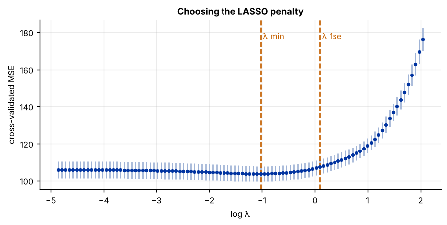
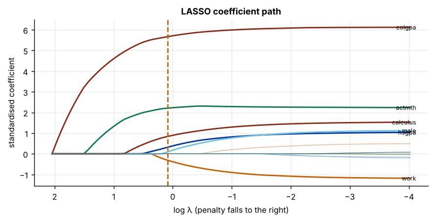

Step 1The question and the model
The question is a practical one for any economics department: which student characteristics predict the final score in an introductory economics course? The file records fourteen candidate predictors for 814 students: study habits, grades, ACT scores, prior economics and calculus, attendance attitudes and family background. Some surely matter and many probably do not. Choosing among them by hand invites a specification search; LASSO makes the choice by a rule.
LASSO (least absolute shrinkage and selection operator; Tibshirani 1996) estimates a linear model but adds a penalty on the size of the coefficients:
The absolute-value penalty sets the coefficients of weak predictors to exactly zero, so LASSO selects variables while it estimates. The penalty weight \(\lambda\) controls how many survive: \(\lambda = 0\) gives OLS; a large \(\lambda\) drops everything.
| Variable | Definition | Variable | Definition |
|---|---|---|---|
score |
Course score, % (outcome) | male |
1 if male |
age |
Age in years | calculus |
1 if took calculus |
work |
Hours worked per week | econhs |
1 if took economics in high school |
study |
Hours studied per week | attexc, attgood |
1 if attendance rated excellent / good |
colgpa |
College GPA before the course | fathcoll, mothcoll |
1 if father / mother has a degree |
hsgpa |
High-school GPA | acteng, actmth |
ACT English / maths score |
Prediction, not causation
LASSO answers which variables help to predict the score. It does not say that studying more would raise a student's score: a selected variable may stand in for an omitted one, and a dropped variable may still have a causal effect that is small relative to the noise. If the question is causal, use double machine learning instead (see the DML guides).
Step 2Load the data and confirm the starting point
import numpy as np
import pandas as pd
from sklearn.model_selection import KFold, cross_val_score
from sklearn.pipeline import make_pipeline
from sklearn.preprocessing import StandardScaler
from sklearn.linear_model import LassoCV, Lasso, LinearRegression
from sklearn.ensemble import RandomForestRegressor
df = pd.read_csv("econmath.csv")
y = df["score"]
X = df.drop(columns="score")
print(f"N = {len(df)} students, p = {X.shape[1]} candidate predictors")
r = X.corr().abs().where(~np.eye(X.shape[1], dtype=bool))
print(f"largest |r| between predictors: {r.max().max():.2f} ({r.stack().idxmax()[0]} and {r.stack().idxmax()[1]})")
cv = KFold(5, shuffle=True, random_state=0)
rmse = lambda m: (-cross_val_score(m, X, y, cv=cv, scoring="neg_mean_squared_error").mean()) ** 0.5
lasso = make_pipeline(StandardScaler(), LassoCV(cv=5, random_state=0))
forest = RandomForestRegressor(n_estimators=300, min_samples_leaf=5, max_features=0.5, random_state=0)
r_l, r_f = rmse(lasso), rmse(forest)
print(f"cross-validated RMSE: LASSO {r_l:.2f}, random forest {r_f:.2f}, forest gain {1 - r_f / r_l:+.1%}")N = 814 students, p = 14 candidate predictors largest |r| between predictors: 0.77 (attexc and attgood) cross-validated RMSE: LASSO 10.19, random forest 10.40, forest gain -2.0%
The selection tool's rules are met: there are more than 100 observations, the random forest does not beat LASSO out of sample (it is worse), so the relationship is treated as linear, and no two predictors are correlated above 0.8. The last check, sparsity, comes in Step 4.
How to write it: data section
The sample contains 814 students with complete records. The outcome is the course score (in per cent). Fourteen candidate predictors describe study effort, prior achievement, preparation in mathematics and economics, attitudes to attendance and family background. A random forest does not improve on a linear model in five-fold cross-validation, so we model the score as a linear function of the predictors and use LASSO to select among them.
Step 3Standardise, then choose the penalty by cross-validation
The penalty treats every coefficient alike, so the predictors must be on the same scale: a coefficient on hours per week and one on a 0/1 dummy are otherwise not comparable. Standardise first (mean 0, standard deviation 1), inside the pipeline, so that each cross-validation fold is standardised with its own training data.
\(\lambda\) is chosen by five-fold cross-validation. Two choices are standard (Hastie, Tibshirani and Friedman 2009):
- \(\lambda_{\min}\): the penalty with the lowest cross-validated error, the best for prediction;
- \(\lambda_{1se}\): the largest penalty whose error is within one standard error of the minimum, the more conservative choice for selection, because it keeps only predictors whose contribution is clearly above noise.
import matplotlib.pyplot as plt
Xs = StandardScaler().fit_transform(X)
cvfit = LassoCV(cv=KFold(5, shuffle=True, random_state=0), random_state=0).fit(Xs, y)
mse, se = cvfit.mse_path_.mean(1), cvfit.mse_path_.std(1) / np.sqrt(5)
i_min = mse.argmin()
lam_min = cvfit.alphas_[i_min]
lam_1se = cvfit.alphas_[mse <= mse[i_min] + se[i_min]].max()
print(f"lambda_min = {lam_min:.3f} lambda_1se = {lam_1se:.3f}")
fig, ax = plt.subplots()
ax.errorbar(np.log(cvfit.alphas_), mse, yerr=se, fmt="o", ms=3, color="#0033a0", ecolor="#9fb3d6", capsize=0)
for lam, lab in ((lam_min, "λ min"), (lam_1se, "λ 1se")):
ax.axvline(np.log(lam), ls="--", color="#c46000"); ax.text(np.log(lam), mse.max(), " " + lab, color="#c46000")
ax.set_xlabel("log λ"); ax.set_ylabel("cross-validated MSE"); ax.set_title("Choosing the LASSO penalty")lambda_min = 0.358 lambda_1se = 1.094

The error curve is flat near its minimum and rises steeply once the penalty starts to remove the strong predictors. The one-standard-error rule moves to the right along the flat part: a simpler model that predicts almost as well.
Step 4Which predictors survive?
def fit_at(lam):
return Lasso(alpha=lam, max_iter=50000).fit(Xs, y).coef_
tab = pd.DataFrame({"λ min": fit_at(lam_min), "λ 1se": fit_at(lam_1se)}, index=X.columns).round(3)
tab["kept at 1se"] = np.where(tab["λ 1se"] != 0, "yes", "")
print(tab.sort_values("λ 1se", key=abs, ascending=False))
kept = list(tab.index[tab["λ 1se"] != 0])
print(f"\nkept at lambda_1se: {len(kept)} of {X.shape[1]} predictors ({len(kept) / X.shape[1]:.0%})")λ min λ 1se kept at 1se colgpa 5.996 5.667 yes actmth 2.284 2.209 yes calculus 1.300 0.838 yes hsgpa 0.823 0.315 yes work -0.911 -0.308 yes male 0.776 0.089 yes study -0.000 -0.000 econhs -0.000 -0.000 age -0.000 -0.000 acteng 0.208 0.000 attexc 0.000 0.000 attgood -0.000 -0.000 fathcoll 0.000 0.000 mothcoll -0.000 0.000 kept at lambda_1se: 6 of 14 predictors (43%)
The coefficients are in units of the score per one standard deviation of each predictor, so their sizes can be compared directly. At \(\lambda_{1se}\) LASSO keeps fewer than half of the predictors: the problem is sparse, which is the condition for LASSO in the selection tool (Rule A4). College GPA and the ACT maths score carry most of the signal; high-school GPA, calculus, work hours and sex add smaller amounts.
The coefficient path shows the whole story at once: as the penalty falls (to the right), predictors enter one by one.
from sklearn.linear_model import lasso_path
alphas, coefs, _ = lasso_path(Xs, y, alphas=np.logspace(np.log10(lam_min / 20), np.log10(cvfit.alphas_.max()), 80))
fig, ax = plt.subplots()
for j, name in enumerate(X.columns):
ax.plot(np.log(alphas), coefs[j], lw=1.6 if name in kept else 0.8, alpha=1 if name in kept else 0.45)
if name in kept:
ax.text(np.log(alphas[-1]) - 0.1, coefs[j, -1], name, fontsize=7, ha="right", va="center")
ax.axvline(np.log(lam_1se), ls="--", color="#c46000"); ax.invert_xaxis()
ax.set_xlabel("log λ (penalty falls to the right)"); ax.set_ylabel("standardised coefficient"); ax.set_title("LASSO coefficient path")
Step 5How stable is the selection?
A single LASSO fit can be fragile: with a slightly different sample a borderline predictor may enter or leave. A simple check is to refit LASSO on many bootstrap samples, with the same \(\lambda_{1se}\), and count how often each predictor is kept (the idea behind stability selection; Meinshausen and Bühlmann 2010).
rng = np.random.default_rng(0)
B, picks = 200, np.zeros(X.shape[1])
for b in range(B):
idx = rng.integers(0, len(y), len(y))
picks += Lasso(alpha=lam_1se, max_iter=50000).fit(Xs[idx], y.iloc[idx]).coef_ != 0
freq = pd.Series(picks / B, index=X.columns).sort_values(ascending=False)
print((freq * 100).round(0).astype(int).astype(str).add(" %").to_string())colgpa 100 % actmth 100 % calculus 97 % hsgpa 79 % work 77 % male 55 % acteng 16 % age 12 % fathcoll 2 % econhs 0 % mothcoll 0 % attexc 0 % study 0 % attgood 0 %
Predictors kept in nearly every bootstrap sample are robust findings. Predictors kept about half the time are borderline: report them as such and do not build an argument on them.
Reading the frequencies
A common rule is to call a predictor stable if it is selected in at least 80 % of the resamples (Meinshausen and Bühlmann suggest thresholds between 60 % and 90 %). Below that, the evidence that it adds predictive power is weak, even if the full-sample fit keeps it.
Step 6Accuracy on data the model has not seen
Cross-validation chose \(\lambda\), so the cross-validated error at \(\lambda_{\min}\) is slightly optimistic. The honest test is nested cross-validation: an outer loop holds out each fold in turn, and the whole procedure, including the choice of \(\lambda\), is run on the other four.
from sklearn.dummy import DummyRegressor
outer = KFold(5, shuffle=True, random_state=1)
models = {"mean only": DummyRegressor(),
"OLS, all 14": make_pipeline(StandardScaler(), LinearRegression()),
"LASSO (λ min)": make_pipeline(StandardScaler(), LassoCV(cv=5, random_state=0)),
"random forest": forest}
res = {k: (-cross_val_score(m, X, y, cv=outer, scoring="neg_mean_squared_error")) ** 0.5 for k, m in models.items()}
out = pd.DataFrame({"RMSE": {k: v.mean() for k, v in res.items()}, "s.d. across folds": {k: v.std() for k, v in res.items()}}).round(2)
out["R² (out of sample)"] = (1 - out["RMSE"] ** 2 / y.var()).round(3)
print(out)RMSE s.d. across folds R² (out of sample) mean only 13.29 0.56 0.002 OLS, all 14 10.26 0.59 0.405 LASSO (λ min) 10.18 0.57 0.415 random forest 10.34 0.63 0.396
LASSO predicts slightly better than OLS with all fourteen predictors (an RMSE of 10.18 against 10.26 points), while setting five of them to zero even at \(\lambda_{\min}\); both explain about 40 % of the variance out of sample, far better than predicting the mean. The forest is worse. When OLS and LASSO predict equally well, the advantage of LASSO is the interpretation: it shows which few predictors carry the signal.
Step 7Post-LASSO OLS, and why its p-values are not valid
A common next step is to re-estimate OLS on the predictors LASSO selected (post-LASSO; Belloni and Chernozhukov 2013). This removes the shrinkage bias in the kept coefficients and gives them their natural units.
import statsmodels.api as sm
post = sm.OLS(y, sm.add_constant(X[kept])).fit(cov_type="HC1")
print(post.summary2().tables[1][["Coef.", "Std.Err.", "P>|z|"]].round(3))Coef. Std.Err. P>|z| const 12.266 3.661 0.001 work -0.129 0.040 0.001 colgpa 11.474 0.815 0.000 hsgpa 3.244 1.180 0.006 actmth 0.652 0.114 0.000 male 2.161 0.738 0.003 calculus 3.198 0.822 0.000
Do not report these p-values as tests
The predictors were chosen because they fit well in this sample, so the usual standard errors are too small and the p-values too optimistic (the post-selection inference problem). Report post-LASSO coefficients as descriptions of the selected model. If you need a valid test of one variable's effect, use the double-selection or DML methods in the causal guides, which are designed for exactly that.
Step 8Write it up
final = pd.DataFrame({"LASSO coefficient (per s.d.)": tab.loc[kept, "λ 1se"],
"post-LASSO OLS (natural units)": post.params[kept].round(3),
"selected in bootstrap": (freq[kept] * 100).round(0).astype(int).astype(str) + " %"})
print(final)
print(f"\nNested CV RMSE: LASSO {out.loc['LASSO (λ min)', 'RMSE']}, OLS {out.loc['OLS, all 14', 'RMSE']}, mean-only {out.loc['mean only', 'RMSE']}")LASSO coefficient (per s.d.) post-LASSO OLS (natural units) selected in bootstrap work -0.308 -0.129 77 % colgpa 5.667 11.474 100 % hsgpa 0.315 3.244 79 % actmth 2.209 0.652 100 % male 0.089 2.161 55 % calculus 0.838 3.198 97 % Nested CV RMSE: LASSO 10.18, OLS 10.26, mean-only 13.29
How to write it: results
We select predictors of the course score with LASSO, choosing the penalty by five-fold cross-validation and using the one-standard-error rule for selection. Of the fourteen candidate predictors, LASSO keeps six (Table X): college GPA and the ACT mathematics score are the strongest, followed by high-school GPA, a calculus background, hours of paid work (negative) and sex. College GPA and the ACT mathematics score are selected in every one of 200 bootstrap resamples and calculus in 97 %; high-school GPA and work hours in about 80 %, and sex in only 55 %, so we treat sex as a borderline predictor. In nested cross-validation, LASSO predicts the score with an RMSE of 10.2 points (out-of-sample R² of 0.42), slightly better than OLS with all fourteen predictors and far better than the sample mean (13.3 points); a random forest does not improve on it. Because the predictors were chosen on the same data, we report the post-LASSO coefficients as descriptive and do not interpret their p-values as tests.
Checklist for the paper
- State the aim (prediction or selection) and why a penalised model is used.
- Report how λ was chosen (CV folds, λ min or λ 1se) and that predictors were standardised.
- Show the selected predictors, the coefficient path, and the selection frequencies.
- Report out-of-sample accuracy against OLS and a mean-only benchmark (nested CV).
- Do not give causal readings or post-selection p-values.